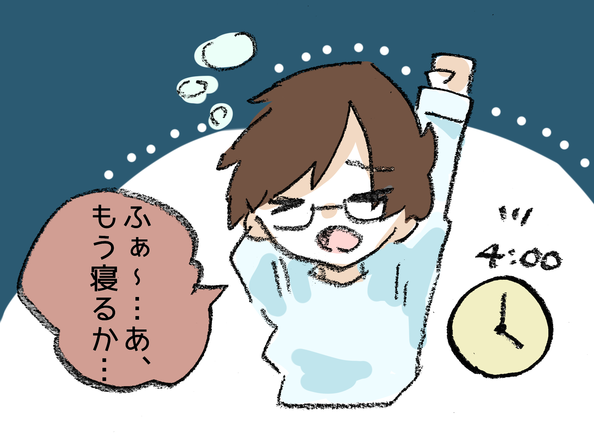
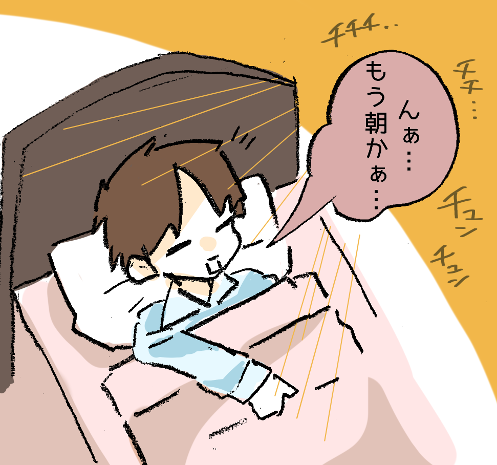

2018/11/22
こんばんちゃあ！
深夜テンション！Ａｍｙです！
え…？日付…？
今日が何日かって…？
え……？
22日…でしょ…？
11/22、でしょ…？？？
…も、もしかして私…っ
タイムリープしてるぅぅーーーーーーーーっ！？！？
…はい！てなわけでここは、11/22の世界線です！！
今は22日なのです！！！！！！
さぁ22日の話をしよう！！！！((((((暴論))))))
まぁ、今回の話は日付とは関係ないんだけどね。
(なんなんやねん！！！)
今日はね、私の「冬の好きな物」ベスト３を考えました！
第三位！「マフラー女子」！！！！

特に温かい缶ジュース持ってるのが好き！！！
そんでね、これが難しくてね…袖がね…！
萌え袖ももちろん好きなんだけどね…
寒くて赤くなった手首の薄い骨が見えるのも好きなんだよ。
次、サクサク行くぞ！第二位！「夜道に目が合う猫」

この猫ねー、冬になるとよく会うんですよ。
めっちゃ凛々しくて可愛いの…
さぁ栄えある第一位ーー！
「妹と飲むホットココア」！！
えへへ～～～～！
ただのホットココアじゃだめなんですよ・・・
妹が帰ってきたときとか、私が帰宅した時に
「ココア飲もうか」っていって、二人でいそいそと準備して
そうやって飲むココアが最高なの。
以上三つ、Ａｍｙの「冬の好きな物」でした！
ほんとにね、どれもす～～っごくすきなんだぁ。
来年の冬にはまた他に好きなものができてるかな？
出来てるといいな。
第一位は不動だけど！
さて、そろそろタイムリープも終わりそうだ…
皆、またね！
未来で待ってる！！！！！！(シュンッ)